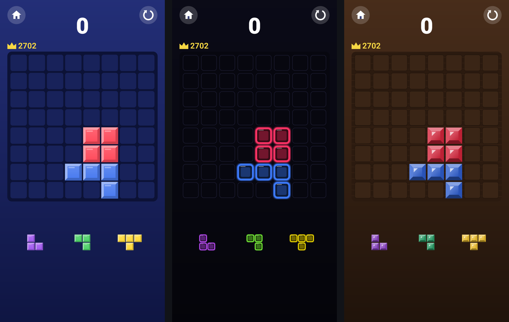

Incastro
Puzzle a blocchi 8×8 gratuito e open source · Free, open-source 8×8 block puzzle
Come funziona una partita · mappa interattiva (italiano) How a game works · interactive map (English) Codice sorgente · Source code · GitHub
Mappe create con Archify · Maps made with Archify